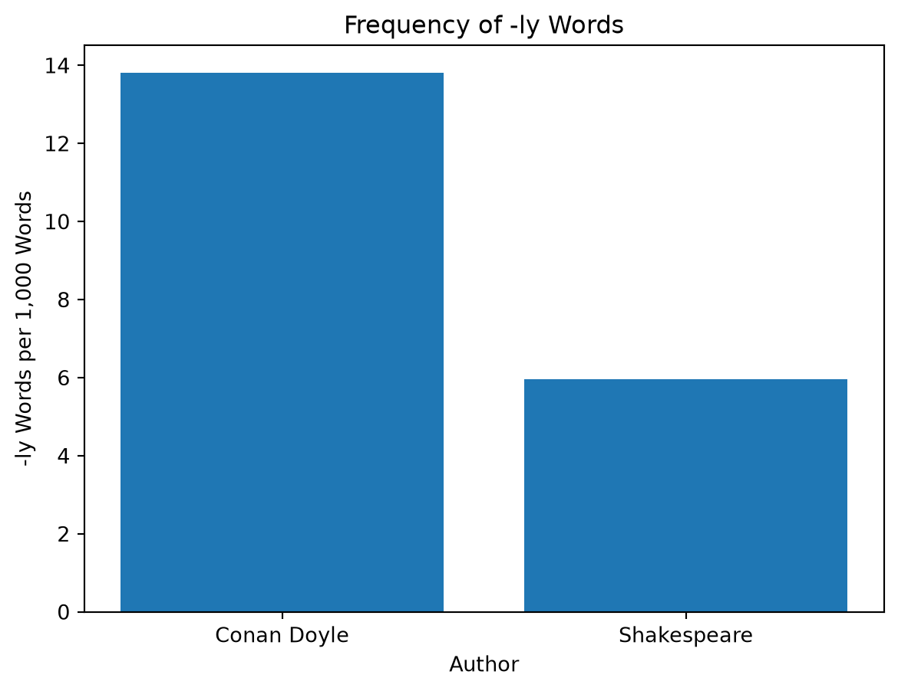
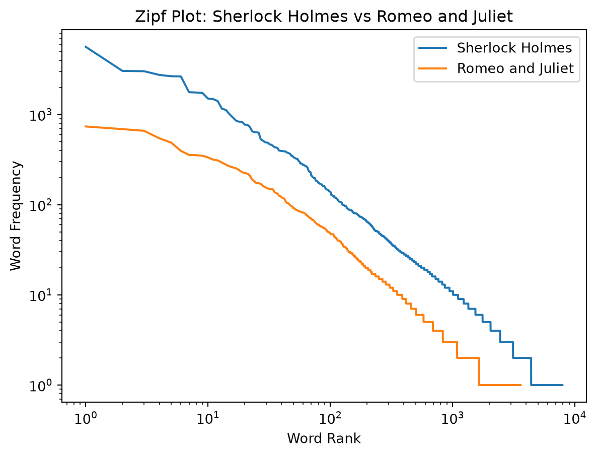

import re
from collections import Counter
import matplotlib.pyplot as plt
try:
with open("../../data/gutenberg/sherlock.txt", "r", encoding="utf-8") as f:
sherlock_lines = f.readlines()
with open("../../data/gutenberg/romeo.txt", "r", encoding="utf-8") as f:
romeo_lines = f.readlines()
except FileNotFoundError:
print("Couldn't find that file — check the filename and location.")
## sherlock.txt
while not sherlock_lines[0].startswith("*** START"):
sherlock_lines = sherlock_lines[1:] # chop off the first line
sherlock_lines = sherlock_lines[1:] # chop off the *** START line itself
while not sherlock_lines[-1].startswith("*** END"):
sherlock_lines = sherlock_lines[:-1] # chop off the last line
sherlock_lines = sherlock_lines[:-1] # chop off the *** END line itself
sherlock_text = "".join(sherlock_lines)
## romeo.txt
while not romeo_lines[0].startswith("*** START"):
romeo_lines = romeo_lines[1:] # chop off the first line
romeo_lines = romeo_lines[1:] # chop off the *** START line itself
while not romeo_lines[-1].startswith("*** END"):
romeo_lines = romeo_lines[:-1] # chop off the last line
romeo_lines = romeo_lines[:-1] # chop off the *** END line itself
romeo_text = "".join(romeo_lines)
## cleaning and splitting
sherlock_words = re.split(r"[\W]+", sherlock_text.lower())
sherlock_words = [w for w in sherlock_words if w != ""]
romeo_words = re.split(r"[\W]+", romeo_text.lower())
romeo_words = [w for w in romeo_words if w != ""]title: “HW 4 - Detective Gutenberg” author: “Charlie McNeece” format: html jupyter: pyhton3
Part 1 - Setup and Cleaning
Explanation
This code opens Sherlock Holmes and Romeo and Juliet and reads them line by line. While loops remove Project Gutenberg headers and foots. Then all lines get combined into one string, make all letters lowercase, and seperate them. And, remove empty strings so they do not ocunt as words.
Part 2 - Tokens, Types, and a Fair Comparison
## TTR, total
sherlock_ttr = len(set(sherlock_words)) / len(sherlock_words)
romeo_ttr = len(set(romeo_words)) / len(romeo_words)
print("Sherlock TTR:", sherlock_ttr)
print("Romeo TTR:", romeo_ttr)
## TTR, 10000
sherlock_ttr_10000 = len(set(sherlock_words[:10000])) / len(sherlock_words[:10000])
romeo_ttr_10000 = len(set(romeo_words[:10000])) / len(romeo_words[:10000])
print("Sherlock TTR (10,000 words):", sherlock_ttr_10000)
print("Romeo TTR (10,000 words):", romeo_ttr_10000)
## Explore 3: Average Word Length
sherlock_wd_len_total = 0
for w in sherlock_words:
sherlock_wd_len_total += len(w)
sherlock_avg_word_len = sherlock_wd_len_total / len(sherlock_words)
romeo_wd_len_total = 0
for w in romeo_words:
romeo_wd_len_total += len(w)
romeo_avg_word_len = romeo_wd_len_total / len(romeo_words)
print("Romeo Average Word Length:", romeo_avg_word_len)
print("Sherlock Average Word Length:", sherlock_avg_word_len)
print("Sherlock tokens:", len(sherlock_words))
print("Sherlock types:", len(set(sherlock_words)))
print("Romeo tokens:", len(romeo_words))
print("Romeo types:", len(set(romeo_words)))Sherlock TTR: 0.07472040016988345
Romeo TTR: 0.1335285179557499
Sherlock TTR (10,000 words): 0.2166
Romeo TTR (10,000 words): 0.2067
Romeo Average Word Length: 3.983878738464959
Sherlock Average Word Length: 4.0766457458354965
Sherlock tokens: 105955
Sherlock types: 7917
Romeo tokens: 26983
Romeo types: 3603Explanation
I used len() to count total words, tokens, and set() counts unique words. I calculated the TTR for the first 10,000 words of each book. I calculated average word length by adding the lengths of the words and dividing by the total number of words.
Results
The tokens for Sherlock was 105955 and the tokens for Romeo was 26983. The types for Sherlock was 1917 and for Romeo it was 3603. The raw TTR of Sherlock was 0.0747 and for Romeo was 0.1335; shakespeare has a better vobaulary. The TTR of the first 10,000 words for Sherlock is 0.2166 and for Romeo is 0.2067; this is fairer because Sherlock is longer. The average word lenght for Sherlock is 4.076 and for Romeo was 3.983.
Part 3 - Affixes, Dialogue, and Common Words
## Adverbs & Affixes
affixes = ["un", "ness", "ment"]
for affix in affixes:
if affix == "un":
count1 = sum(1 for w in sherlock_words if w.startswith(affix))
count2 = sum(1 for w in romeo_words if w.startswith(affix))
else:
count1 = sum(1 for w in sherlock_words if w.endswith(affix))
count2 = sum(1 for w in romeo_words if w.endswith(affix))
rate1_affix = count1 / len(sherlock_words) * 1000
rate2_affix = count2 / len(romeo_words) * 1000
print(affix, "Sherlock:", round(rate1_affix, 2))
print(affix, "Romeo:", round(rate2_affix, 2))
count1 = sum(1 for w in sherlock_words if w.endswith("ly"))
count2 = sum(1 for w in romeo_words if w.endswith("ly"))
rate1 = count1 / len(sherlock_words) * 1000
rate2 = count2 / len(romeo_words) * 1000
print("-ly Sherlock:", round(rate1, 2))
print("-ly Romeo:", round(rate2, 2))
print("Sherlock -ly examples:",
sorted(set(w for w in sherlock_words if w.endswith("ly")))[:50])
print("Romeo -ly examples:",
sorted(set(w for w in romeo_words if w.endswith("ly")))[:50])
## Dialogue
sherlock_clean = [line for line in sherlock_lines if line.strip()]
romeo_clean = [line for line in romeo_lines if line.strip()]
quot_list = ['"', '“', '‘']
sherlock_dialogue = sum(
1 for line in sherlock_clean
if any(q in line for q in quot_list)
)
romeo_dialogue = sum(
1 for line in romeo_clean
if any(q in line for q in quot_list)
)
sherlock_percent = sherlock_dialogue / len(sherlock_clean) * 100
romeo_percent = romeo_dialogue / len(romeo_clean) * 100
print("Sherlock Holmes:")
print("Dialogue lines:", sherlock_dialogue)
print("Percentage:", round(sherlock_percent, 2), "%")
print("Romeo and Juliet:")
print("Dialogue lines:", romeo_dialogue)
print("Percentage:", round(romeo_percent, 2), "%")
## Most Common Words
from collections import Counter
stopwords = ["the", "and", "a", "to", "of", "in", "i", "you", "it", "is", "that", "was", "he", "she", "his", "her", "my", "for", "on", "with", "at", "as", "but", "not", "be", "have", "had", "me", "we", "they", "this", "your", "are", "from", "or", "by", "an"]
sherlock_filtered = [word.lower() for word in sherlock_words if word.lower() not in stopwords]
romeo_filtered = [word.lower() for word in romeo_words if word.lower() not in stopwords]
sherlock_top10 = Counter(sherlock_filtered).most_common(10)
romeo_top10 = Counter(romeo_filtered).most_common(10)
print("Sherlock Holmes:", sherlock_top10)
print("Romeo and Juliet:", romeo_top10)un Sherlock: 3.56
un Romeo: 3.11
ness Sherlock: 1.68
ness Romeo: 0.93
ment Sherlock: 1.62
ment Romeo: 1.19
-ly Sherlock: 13.82
-ly Romeo: 5.97
Sherlock -ly examples: ['abnormally', 'abruptly', 'absolutely', 'absurdly', 'accurately', 'actually', 'admirably', 'ally', 'alternately', 'amply', 'anxiously', 'apparently', 'apply', 'approvingly', 'assuredly', 'badly', 'beautifully', 'bitterly', 'blandly', 'breathlessly', 'briefly', 'brightly', 'brilliantly', 'briskly', 'burly', 'calmly', 'carefully', 'carelessly', 'certainly', 'cheerily', 'cleanly', 'clearly', 'closely', 'coarsely', 'coldly', 'comely', 'comfortably', 'commonly', 'comparatively', 'completely', 'comply', 'concisely', 'considerably', 'continually', 'continuously', 'conveniently', 'cordially', 'correctly', 'crisply', 'cruelly']
Romeo -ly examples: ['ally', 'assembly', 'beggarly', 'bitterly', 'briefly', 'carelessly', 'cheerly', 'chiefly', 'closely', 'coldly', 'conveniently', 'deadly', 'dearly', 'early', 'expressly', 'faintly', 'fairly', 'faithfully', 'family', 'fearfully', 'fly', 'friendly', 'ghostly', 'gladly', 'goodly', 'haply', 'happily', 'heavenly', 'holy', 'homely', 'honestly', 'humbly', 'immediately', 'immoderately', 'italy', 'justly', 'kindly', 'lately', 'lightly', 'likely', 'lively', 'lovely', 'madly', 'manly', 'mannerly', 'melancholy', 'merrily', 'moderately', 'monthly', 'needly']
Sherlock Holmes:
Dialogue lines: 2547
Percentage: 27.35 %
Romeo and Juliet:
Dialogue lines: 27
Percentage: 0.65 %
Sherlock Holmes: [('which', 771), ('there', 515), ('said', 486), ('upon', 465), ('holmes', 462), ('so', 449), ('him', 434), ('very', 399), ('been', 393), ('all', 392)]
Romeo and Juliet: [('romeo', 316), ('s', 310), ('thou', 278), ('d', 241), ('juliet', 189), ('what', 173), ('o', 173), ('thy', 170), ('capulet', 163), ('love', 151)]Explanation
I counted how many words ended in -ly and calculated per 1,000 words. I also compared three other affixes. I checked the lines for quotation marks and calculated percentage of nonempty lines containing them. I removed stopwords and found top ten most common words.
Result
Sherlock had 13.82 words ending in -ly and romeo had 5.97; not all words were adverbs. I chose “un”, “ness”, and “ment” as my three adverbs. “un” was in Sherlock 3.56 and romeo 3.11. “ness” was in sherlock 1.68 and romeo 0.93. “ment” was in sherlock 1.62 and romeo 1.19. In sherlock 27.35% of lines used quotations and in romeo 0.65%. I don’ think it counted all the dialogue in romeo because it’s a play so there is not quotes around everything. The most common words in sherlock were which, there, said, upon, holmes, so, him, very, been, all. The most common is romeo were romeo, s, thou, d, juliet, what, o, thy, capulet, love. The words holmes and said in sherlock suggest alot of narration and conversation. The words romeo, juliet, and love in romeo and juliet suggests that romeo and juliet is alot about them and love.
Part 4 - Visualize it
plt.figure()
plt.bar(
["Conan Doyle", "Shakespeare"],
[rate1, rate2]
)
plt.title("Frequency of -ly Words")
plt.xlabel("Author")
plt.ylabel("-ly Words per 1,000 Words")
plt.savefig("ly_words_comparison.png")
plt.show()
sherlock_counts = Counter(sherlock_words)
romeo_counts = Counter(romeo_words)
sherlock_freqs = sorted(sherlock_counts.values(), reverse=True)
romeo_freqs = sorted(romeo_counts.values(), reverse=True)
sherlock_ranks = range(1, len(sherlock_freqs) + 1)
romeo_ranks = range(1, len(romeo_freqs) + 1)
plt.figure()
plt.plot(sherlock_ranks, sherlock_freqs, label="Sherlock Holmes")
plt.plot(romeo_ranks, romeo_freqs, label="Romeo and Juliet")
plt.title("Zipf Plot: Sherlock Holmes vs Romeo and Juliet")
plt.xlabel("Word Rank")
plt.ylabel("Word Frequency")
plt.xscale("log")
plt.yscale("log")
plt.legend()
plt.savefig("zipf_comparison.png")
plt.show()

Explanation
I used a bar graph to compare use of -ly between the two authors. The y-axis is the number of words ending in -ly per 1,000 words. I then have a Zipf plot that shows how often each word appeared and is sorted from highest to lowest. Both books are plotted on the same graph.
Part 5 - The Verdict
They both use language differently. Sherlock had more words ending in -ly and longer words. Romeo had a higher raw TTR, but Sherlock’s was higher when looking at just 10,000 words. I think the 10,000 word TTR was better because it compared the two fairly. The dialogue comparison wasn’t very good becasue Romeo is a play so it didn’t caluclate all the dialogue. If someone handed me an anonymous chapter I would use the 10,000 word TTR to figure out author.
Part 6 - Reflection
It was honeslty about the same to do this is class and at home other than in class I have your help if I need it. I learned how to use python to make charts which was suprising because I didn’t know it was possible. I used an AI tool to help me figure out what was wrong with my code when I got errors and to check to make sure all my code was correct. I didn’t use AI on the explanations or the results because it was easy to look at all my information to come up with answers.